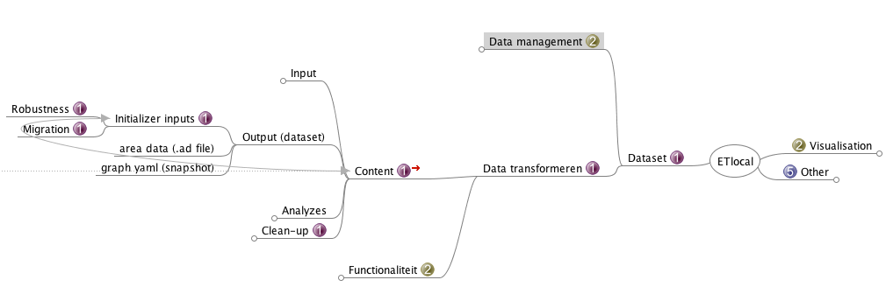

class: center, middle # ETLocal ## Sprint meeting --- # Agenda 1. Overview 2. What did we do the previous sprint? 3. What didn't we do? 4. What are we going to do? --- # Overview:  --- # What did we do the previous sprint? - Wrapping up the initializer inputs changes - Migrating (Pending) --- # What didn't we do? ? --- class: center, middle # What are we going to do? --- # (Previous) Project deliverables + preliminary planning To eliminate the use of Excel: <table cellpadding='4' border='1' style="border-collapse: collapse; font-size: 70%;"> <tbody> <tr> <td> <td><strong>Households</strong></td> <td><strong>Buildings<strong></td> <td><strong>Industry</strong></td> <td><strong>Agriculture + Other</strong></td> <td><strong>Supply</strong></td> <td><strong>Transport</strong></td> <td><strong>Total</strong></td> </tr> <tr> <td><strong>Initializer inputs robustness</strong></td> <td colspan="6" style="background-color: green;">Done</td> <td><strong>0</strong></td> </tr> <tr> <td><strong>General discussion transformer</strong></td> <td colspan="6" style="background-color: yellow;">Pending (4 days)</td> <td><strong>4</strong></td> </tr> <tr> <td><strong>Code implementation transformer</strong></td> <td colspan="6" style="background-color: orange;">Prototyping (8 days)</td> <td><strong>8</strong></td> </tr> <tr> <td><strong>Bugs regarding transformer</strong></td> <td colspan="6" style="background-color: red;">Not started (6 days)</td> <td><strong>6</strong></td> </tr> <tr> <td><strong>Excel</strong></td> <td>1</td> <td>0</td> <td>0</td> <td>0</td> <td>0</td> <td>0</td> <td><strong>1</strong></td> </tr> <tr> <td><strong>Updating nodes and edges</strong></td> <td>1</td> <td>1</td> <td>1</td> <td>1</td> <td>1</td> <td>1</td> <td><strong>6</strong></td> </tr> <tr> <td><strong>Project management</strong></td> <td>3</td> <td>3</td> <td>3</td> <td>3</td> <td>3</td> <td>3</td> <td><strong>18</strong></td> </tr> <tr> <td><strong>Merging / Review</strong></td> <td>2</td> <td>2</td> <td>2</td> <td>2</td> <td>2</td> <td>2</td> <td><strong>12</strong></td> </tr> </tbody> </table> 55 days / 10 = 5.5 sprints --- # Transformers